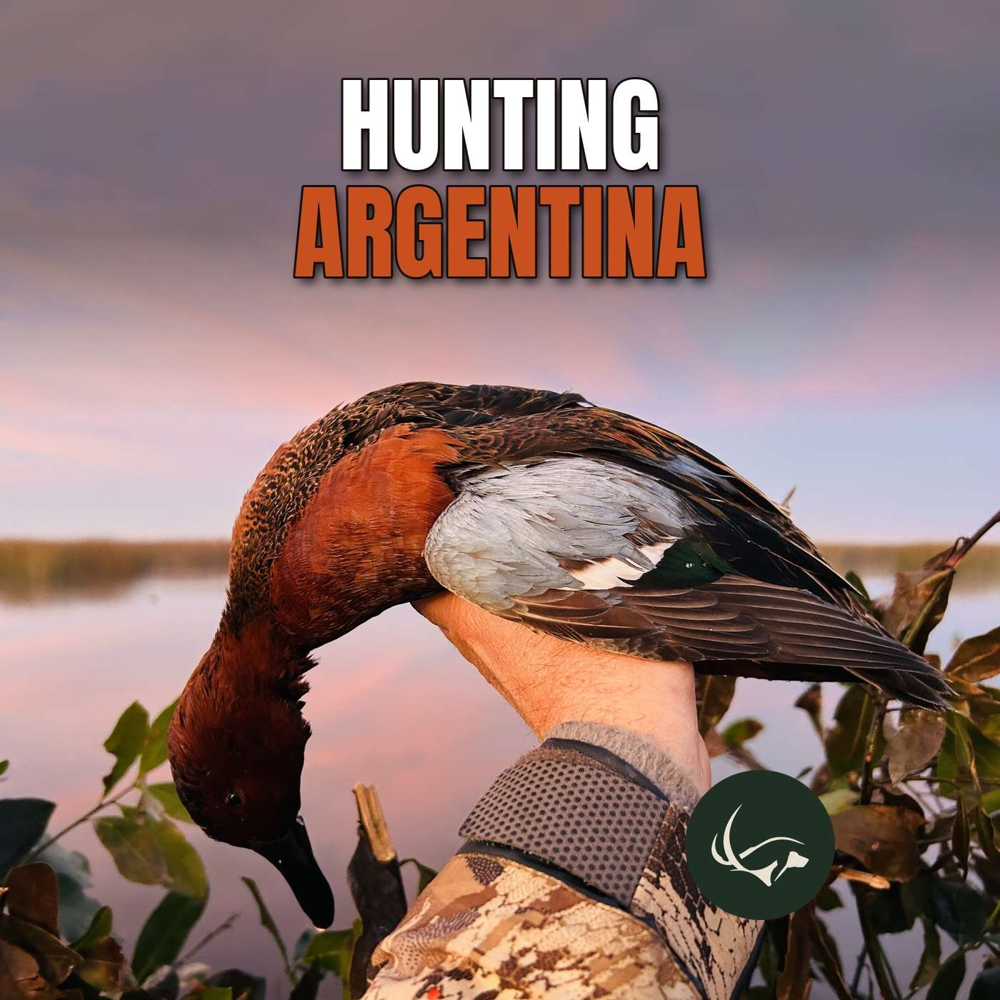

Episode 66 · October 20, 2026 · 1:23:32
Hunting Argentina: Red Stag, Ducks & Dove with Lucas O'Farrell (L.O. Hunting Service)

About This Episode
Tyce Erickson sits down with Lucas O'Farrell of Lucas O'Farrell Hunting Service (L.O. Hunting Service), an Argentina waterfowl and big game outfitter who has been guiding and hosting hunters for nearly 20 years. Lucas shares how he built his outfitting business from scratch, then breaks down free-range red stag in Patagonia, high-volume duck hunting in the Buenos Aires region, Córdoba dove shoots, what trips really cost, and how to plan a combo hunt. Hosted hunt update: In Ep.65, Tyce mentioned his hosted Argentina hunt next July. This episode is with the outfitter for that hunt, Lucas O'Farrell. We're taking deposits now: 2 spots left for the waterfowl hunt and up to 4 spots left for red stag. To learn more or put down a deposit, email office@utahbirddogtraining.com or DM us on Instagram. In this episode:
Questions about the training topics in this episode? Tyce works with bird dog owners and hunters through Utah Bird Dog Training. Reach out to work with him directly.
Resources & Links
- lohuntingservice.com
- The Gunshy Fix — Sound conditioning program for gunshy dogs.
- Kuranda Dog Beds — Elevated, chew-proof dog beds built for working dogs.
- Gunner — Crash-tested kennels, bumpers, and gear for working dogs.
- NuVet — Cold-pressed supplements for optimal dog health.
- All American Canine — Made-in-the-USA treats and supplements for working dogs. Promo code: UTAHBIRDDOG.
- HOSS Straps — Weatherproof dog collars, e-collar straps, and gear straps. Promo code: UTBD15.
- Paradigm Sporting Dog — Veterinarian-designed first aid kits for bird dogs.
- Utah Bird Dog Training — Tyce's professional training services.
- Field Bred Golden Retrievers — Tyce and Rachel's golden retriever breeding program.
- Utah Pointing Labs — Tyce's pointing lab breeding program.
Transcript
Full transcript for Episode 66: Hunting Argentina: Red Stag, Ducks & Dove with Lucas O'Farrell (L.O. Hunting Service).
Tyce
Lucas O'F hunt. So we do have a couple more spots,, spots open. If you're looking to come down and do a three day hunt, it's a six hunts,, morning evening hunt. And we're, and we're going to be getting these amazing species that you just can't find a lot most in North America. So send us a a a a I So if you're looking to hunt And if you're interested, we And if you're interested, we are getting And if you're interested, we are getting a positive and now to go bow hunting or rifle hunting with me down in Argentina. So hit me up if you're interested in that. So, So, I want to shout out to our Hit me up if you want to get a shout out to our sponsors. All American Canine, if you go to All American Canin.com, or you look at the link in our show notes, you can check out their, the products that they offer. These products are 100% source of seed oils, no additives and no preservatives, just whole food, animal, ingredients grown on American farms, carefully dehydrated, make the nutrient dense treat supporting your dogs for health and for the long haul. So all natural, good stuff. These are good to give them a little treat before they get out and go hunting. I'm giving them a little energy boost if you're not a big treat guy. I'm not personally a give treat, treats to dogs all day type guy. So, but treats are, you give them a little, like I say, give them a little snack before you go hunting, or, hey, it's their birthday, or you're just like, hey, do a trick for me, or do a command, now here's a treat. These are good ones. Yesterday was just feeding my dog some of the freeze-dried minnows. It was the first time I had tried those out. And I was a little worried, honestly, when I opened that bag up that it would be pretty rank. But to be honest, there was like very little Check them out, they have some the other stuff on their website, allamericancanine.com, I am also putting using their weight gainer, it smells good, it smells like a protein drink you could put it, just mix it in some milk and it would be ready to roll, but ahh but they do have a good shake, now I'm in, it's the morning time here, they have a weight gainer, if your dog is struggling to put on weight, they have a weight, it's called their weight gaineran to help that skinny dog ears put some weight on. Check them out, check out any of our other people that will help us out with the show in the show notes, Harunda, if you're looking for a dog caught.. We have some other links that we're going to be adding soon, so check them out, support out those companies, support us, we really appreciate it. you guys listen this show and I hope you guys enjoy this K This was a fun one. So again, hit me up if you're wanting to go hunt ducks in Argentina or hunt red stag or do both of them. So we without further ado, we'll get started into the podcast. I'm really excited today for this podcast today on the show. I have with me, Lucas O'Farrell,, from Argentina. You're in Argentina right now, right Lucas? Or no, back in your home. I know you've been traveling and we've had a hard,, we're both busy people and been trying to connect. So I'm excited. We've been able to, we're able to connect today the day and learn about hunting in Argentina, and learn from your experience, and have a good conversation here. So thanks for coming on today, Lucas. No worries, it the pleasure. So, k give us give us a background of who Lucas is. Tell us where you came from, did Did you You come from a hunting family? Is it something you got into later in your life? Give us an overview of who you are. It's a it's a funny story because When I was little, I used to go every summer to my father's farm in Patagonia. So, we used to fly-fish a lot, and I... I used to have some cousins and you know, one summer one of my cousins arrived and said look what my dad bought. It was a 22 long rifle. I said, oh, that looks cool. You know, there. That's do there. And so we spent the whole frivolity going out, shooting rabbits. Yeah, the jack rabbit. Okay. So in those times we used to have a lot of like the, like the bunnies, you know, small ones. That they show up from, I don't know, where everybody was hating them, because they were making holes everywhere. And that damaged your horses and the cattle and everything. So yeah, it was, you, know, shooting all the rabbits. and then I started growing up, and one time I got, I got to a barbecue with one of my, and he said I have a friend who has a fishing lodge in the end and the world, you know I can introduce you you go you know guiding there I said yeah that would be cool the so that's how I, I introduce myself in the fishing business, and then that same company took me to the And I started guiding also there. And then I went back to the fishing business, then I went through, I, I would say two more out feeders by myself to work and help. And let me tell you, I learned a lot of good things and a lot of bad things that I should, that nobody should do ever in the next, you know. Yeah, yeah, that makes sense. Yeah, makes sense. Yeah. So, and, and what And one day to another, I start making my own website, and I start sending emails, and I start trying to call some farms in the US, and some associations and some hunting fundraising groups, you know, at the club. What you think is a dream business, well, let me tell you, it's not because I spent 20 years of my life trying to get a significant amount of clients to come with me and to be right now, you know, here, you know. So it takes a long time. First, you have one client, you think you're a rock and roll guy, and it's not that you Next year, maybe you have one or two, maybe, and then every two years you have one, two more, and you start growing up a bit more in business. Yeah. It takes time for sure. It takes a lot of time, and what people dond get is to convince foreign hunters to come all the way to, with a guy who just started his business, it's impossible, you know, because everybody will go to in there, seen, I don't know. 20 years ago, R.I. had the best hunt, whatever. So I said, okay, I got to make all the deal for you. I got to rent this place. We went there.. The. Hunt was terrible. Oh, man. And it was a terrible week. Terrible. So after that, I said, I'm going hunting by myself. So I came back to my family ranch, I stayed in the cabin, by myself, you know, some snacks, I said I'm going to enjoy myself. Suddenly, a person came in, I said I said Lucas, I need your help. I go, for what? He goes, look, I have an American hunter that would like to shoot stack and you are the only guy I don't know in the area I said okay let's to you are the only guy that I know in the area. I said, okay, let's go and meet him. So I went to that house and I introduced myself, you know, and this is, I had a terrible week with these these Germans, and I didn't want any more, you know, soap operas, whatever, you know. the didn't want to have to deal with anyone. No, no, I want something simple, a good hunter, with a rifle, let's go. Yeah. So, stack it 200 yards, shoot it, done. Mm-. And this guy, he started telling me all about all history. It's going to Greenland or Alaska, to this place or other place, all that. And when he shooting up, I'm like, OK, sure. Show me your rifle. He goes, no, I only shoot with a bow. Mm-. Come on. I said, I don't want to deal with this. And that was my first. And I would say one of the most incredible hunts I ever had in my life. we went out with that guy, I could smoke a monster deal with the ball. I was like, wow, that was cool. He said, he doesn't work like that all the time. You know, don't get used to it. I said, I know, I know, I know, but I know that was so nice. So that guy is a very well-known outf-feeder in the U.S. And that was one of the guys who tried to introduce me to a lot of people. And, you know, you know, you know, I got across my way on his way, sure. And still now we're still friends and we see working together. This was, I would guess 10 years ago or 12 years ago. Okay. And we start, yeah. So that was one of the guys that, you know, my, one of my mentors, you know, yeah, yeah. So had you been bow hunting with someone before that or was bow hunting pretty foreign to you up until that point? In that time, I heard stories about bow hunting and the animal was cruising halfway of the hill, and you know in the others every time you go through a ditch and goes back, you know the wind changes the opposite way above the thermals. So one more time let's go down and go up that small hill and we get it to the base and we just went walking fast and then I heard the animal roaring. I said But as we hear and see what he does, you know, and sadly from the hill, I can see the tips so the under is coming up. Yeah. Perfect. And he was, I was like 50 yards from us. Oh, nice. And I remember like yesterday, that animal, or we stay low, he didn't saw us. When he was facing in front of us, I look at this guy said, smoke it. And he goes, no, no, way turn. This is my this animal turns a bead he stretched the ball and the only thing I heard was like yeah and I see the animal walking down the hill and I look at him I said you miss man, man. I said no no shut up listen carefully like what I have to listen, you know, just shut the fuck up, so the animal, I hear him like breathing, like fluids. Yeah, gurgling. Yeah. The blood coming up. Yeah. Yeah. And then, like a roll. Like, holy shit. Yeah, that's it. Yeah. Yeah, he's done. Yeah. Wow. So did you not see the arrow fly and hit the animal then you were kind of down lower. I was I was like 45 degrees in front of him and I the only thing I can see it was maybe tip of the arrow on the back of my, yeah just fly past you. Yes I was looking animal I was just without moving yeah the only thing I heard like Yeah. Yeah. Yeah. Yeah. I assume you've, you've guided, you've guided your pictures. it looks so, looks like there's been some more bow hunters with you, is that, do you guys guide bow hunters then a little more often now, or? Yes, we have more or less like, I would say, two bow hunters a week on the red stack. All the rest, sorry, per week, all the rest are rifle hunters, but I also go bow hunting by myself, you Every time, before the season starts, I go by myself and when the season ends, I go by myself. I said, if, if I see the, focus on the animal, I can, I can see the animal, I can see the animal, but I don't see the beans, if I focus the beans if I focus on the beans, I cannot see the animal. Yes, you know what that means, you know, he goes, yeah, but you can try it as it. don't want to wound it. Yeah, yeah. So no shots and you didn't end up getting an elk then. . No, that was my only- it was a public land, it's rough, you we leased 60,000 acres for ourselves, you and there's nobody else hunting there. That's awesome. Okay, I want to backtrack a little bit. Let's talk about. Since a red stag, let's just go into red stag and big game hunting birds. What are the firearm rules and archery rules in Patagonia for foreigners coming and hunting there or E-E-E-E--E-E-E-E-E-E-E-E-E-E-E-E-E-E-E-E-E- like army guns. Like AR-15, like, yeah, semi-automatic. With this government, they're getting,able, they're allowing that, but you need like other space for that. think it takes like three months for. For in the US? Yes. Yeah, it depends. Yeah, it's three months to I think lately I have suppressors on my rifles and I think back in the day it took me about six months six to nine months but now it's quicker I think it's yeah like you said around two three months something around there. Okay, yeah. I would say the same thing here you know and then for the foreign's that they are coming to If they're going to bring a rifle, this is, this is a tricky thing about coming in with to- the first time you need to have a paperwork sign like a temporary introduction of the gun. That paperwork you arrive to the airport, you go to the gun office, you show it and you're good to go. They're signing your entrance to the country and you're good you're good to go, you know, with your out feeder or hunting lodge. paperwork needs to have the details of the outfielder or the hunting lodge, you, always. When you go back, you show the same paperwork and you're out. But if you come for the second time with a rifle, now you need another permit from the Argentine consulate of in the US. So that's it. That's a tricky thing about coming with a gun for the second time. So it's kind of hard. to come with a gun, the the second time? It looks like the client is asking me why they asked me a permit from the consulate for the second time I said I have no idea those are the rules you know I would guess the first time will be, like, it's more how say it looks more how you say in English, like, more common for the first time to have and it closely perme and that's it. Okay. But to ask in the second time, the third time, the fourth time, it's very strange. With the bow or the crossbow, you don't need any paperwork. Okay. For now, they're not asking any paperwork. Okay. It's easier to travel to New Zealand and travel with a, I took a rifle there also. We had to send the paperwork in, I think, at least three months in in advance to take our rifle there. But I think the bow is bring it in. It wasn't a to go to New Zealand. So, how much time and how much advanced time do people need to do paperwork to to bring a gun into Argentina to hunt with they can do it anytime they like you know on the US and I have the forms you know to my clients I send the forms they fill it in and say send me a copy please because I don't need a copy here just in case you know mm- and we go first to the airport we talk to the police stations and said, hey, I have this client, I have this flight. This is what happened, so they're ready. So everything goes a bit more faster. But still on, I would guess you can be delayed, I would guess between an hour and two hours extra when you arrive on customs. Just checking the number, ammunition, and all those things. Do they have a restriction on how many bullets, how many cartridges you can bring into the country? I'm not pretty sure about how many bullets they can, the foreign can bring, but I saw most of the clients, they bring four boxes of bullets, you know, six times they come in, and there's no problem. Okay, see, there's no problem. So that's a lot of bullets. So yeah, usually, usually only. I usually took like, I took two boxes to New Zealand and that was plenty, you know, know, didn't even shoot through those. The only time I thought it wasn't enough, And it was the time when a client glared and the scope was loose, it got loose, so it was burning a lot of bullets in, and I like damn it. Yeah, that makes sense. That's bad luck for that person, but yeah. So do you go ahead. I always have extra bullets here, and I have my own rifles here, you know, I said, you know, you know, I just don't do the rifles, I use my rifles, you know, I have four GP tower, you know, seven M, you know, perfect shape, you know, they have no complaints at all with the lupo scopes, you know, they're brand new. So it's the perfect shot for the battalion, you know. Yeah, okay. So if people don't want to deal with guns, you have guns that you can you are used from you. Is that correct? Yes. Okay. The same with the dogs on wing shooting. Okay. You have shotguns for everyone and all that. We provide everything yet. Okay, cool.
I was trying to think, I had another question I was gonna ask you about. Okay, guns, traveling around with guns, are there any certain laws in Argentina about when the guns in your car and everything like that? Does it have to be, do you have to have a lock through? the action or is it like, keep it hidden and you're good. It depends on the humor of the police. Some may take you to jail and some may not. You know, I've been stopped with the bolt inside the rifle and the police said that's I'm like, No, the rule says I can't do that, I I think there's some tiny gray spots in Argentina with the knowledge on rules for the police, how we can travel with them. The only thing I can say, just always be with an outfitter that he knows the police, a good touch with the police. So they can manage any situation, you know, for them not to have a bad time, you know. Nothing happened at any time to me and think across, I would like to give it like that. Yeah. And, you know, okay, this is completely outside of the room because you're an outfit. Can people do a DIY, do it yourself hunt in Argentina? Like could I come down and bring my gun as their public land and I could go hunt stag somewhere? You know, and not get in trouble. . I think with the permission of the owner owner of a farm, I would guess you can do it. And is there public land down there? Is everything pretty much private? Like, like? The public land we have is a national parks. Those national parks, they auction every November
and they have different spots, you know, areas. But it's public, but they have the- obligation of customers or clients so clients to always hire the guides or logistics that the National Parks has, you know? Yeah, yeah. So it's like, it's more or less, you know, DIY for yourself, but you always have to go with some guide authorized by National Parks. Yeah, I was just curious on that, but I mean, if I was gonna go to, obviously, Argentian Guided, You want to have someone that knows the language and knows the rules and knows, keeps you safe, knows where the animal. I was just curious if there was anything like that down there, but it probably sounds like it's not really one worth it, and you can't really do that. Well, the other thing we had is that it's also a great spot. We don't have so good. We develop the onyx, for example. So that would make a game changer, for a guy to go by himself, and he doesn't have the Like, okay, makes sense. Cool. So tell it when, since we're on the red, and the other big is the roar like start when's the peak of the roar down there is the end of April or when's the peak of the roar? So I'm going to tell you about down the snow. That's where we are located. Most of the times you have the pre-roar, you have the young bulls that start roaring, they shut up for I would say five days or maybe a week, and everybody starts like crazy again. And really it was a third week of March the peak of frivolity, but what I've been watching the last seasons, I like much more the last week of March, you know, beginning of April, when everything gets much more colder. Also, you have a different and when you are more to and more to the Chile border side, you know, it's more higher ground than, how do you say, the colder weather arrives earlier. So the stacks will start rolling earlier there and then, they start moving to the continent. And, yeah, it's just some details, you know, things. But I always, you know, we are located with a lodge in the most higher part. and every time they tell me they're starting to roar, I'm like okay or maybe five days, they will start to row in the other location, so we are ready. So when would you say the peak time is for that then? You said the end of March, 1st of April? Yes, I would say the last seven days of March. That's what I think. I would feel able to tell you some other things, but that's what I've been learning of that area. So when do you guys hunt them front? When do you. Start hunting hunting them and when do you end March to July? It says on your. Your. Your. Your. Your. Your. Your. Your. Your. Your. Your. Your. Your. Your. Your. Your. Their the. Their. Their. Their. time. That is more or less second week of March until the third week of April. It's between four to six weeks and we make rotation. We leave the clients in the Padone Airport. We pick up new clients in Padone Airport. We come in again and we start again. If people are bow hunting, is the mostly spot in stock? Are you hunting them over water We have some grounds where we know that they are coming down, we stalk them, we walk through theocally the woods. So what I do in my operation, I leave the wood areas for hunting and all the other open fields that they are 30-40 minutes a place. We do right behind her, hunting and then tell me about the habitat. all, What's the, what's the physical conditioning you need to hunt stag there? We, we, we accommodate or we, we try to everybody to be comfortable on what they are in their health, you know? So we have, we have area, they're very easy and we have the truck, we can drive through roads in the, up the mountains, you know, and just park nearby. Yeah. Or we have some other places that we have to walk maybe. That's more rugged and steep. Okay, that's right. No, I have some clients, they just love to stop with me. And sometimes, you know, actually, I have one one of my clients that he loves to walk on and we were coming back and I was I said, Hey, hey, Andy, let me let me just class a bit over there. I look at that, and it was a stag, you know, I will guess. Two miles from us all the way up in the peaks. I said, do you see the stack? just there and said, Andy, look at that. Then I looked, wow. So they went away and said, okay, these guys, they must be behind that hill. So, so it's a walking direction of the other stack, but when I went, I went through and watched the other hill, this guy was standing there. So actually, the two mile walk became 500, five hundred Yeah. Yeah. Yeah. Thank God. That's a monster. That's awesome.
I These look actually like wild stag, right, not genetically modified, you know, like the ones they have in New Zealand, which are, they're cool to see. I was there last year, I actually hunted one. I took a smaller one, I took a, and my friend took a gold and those tags in New Zealand or in Argentina and what you guys kind of have there, with considered a L a big stag. Because some people may see the pictures and say, oh, that one only has a crown of three points on the top and go like, that's not a big stag. But if you're actually, actually, hunting truly wild stag, that's actually a really big stag. So I shot a wild stag in New Zealand, and it was kind of like, it just had the split splits on the top. And it was a pretty decent size stag for just a wild stag in New Zealand. But to some people that hunt elk in the United, Sometimes they're too short because they've been released from some enclosure and they still have a lot of years to develop. But if you see a foreground, or maybe sometimes we find a fire crown on top, that's good. That's very good news. You just better think about it. I have a couple of rules when I'm guiding. as I always say to a client. You know, you are the owner of the trigger, this is your hand. Playing you every time we see an animal, I will let you know. If it is a good or bad one, I'm the one who's not going to lie. If it is a very bad, I will tell you, don't shoot it. If it is this, this is your hand, you want to take it or we leave it. And they decide. If I see a very good one, I'll tell you, that's... I need to shoot that. You need to take that right away. is, no, what I'm saying is a very, you know, hard and strange situation when you're in the field. You're tired, you walk five miles, you are up in the hills, you know, we, you know, breathing is It's a bit exhausting, you know, and you find an animal and then you have to explain with the guide and the client all the time. So this, the, the hunting is around, you said, did you say 70,000, 7, 7,,000, how many acres was it again? So the, the total areas that we lease, that they're, they're, they are around four stanzas in total areas, the total,, accumulated,, acres, it's around 60,000, 60,000. Okay. So are these animals, are the herds being supplemented or are they just there there and this is what you have and you're just managing or what's that look like when it comes to the animals on the landscape? They have some herds of those that they stay around in some certain areas. The males generally on autumn and winter time, they go up to the to the mountains and they stay together. And when the springtime is, sorry. I miss in the studio I miss in winter time they go up and on autumn when they are already coming down, they start searching for these dogs. And they spread out and they start fighting each other other. And then they keep doing the same thing. They go back again, all together like friends, and they come back and fight for the women. So I guess my... Question is, do you guys, like New Zealand, are these animals just there, or do you guys buy other animals and put them in-in with your herds, or are they just wild animals on the land? Oh, no, sorry. No, no, it is 100% wild animals. Okay, okay. Yeah, cool. Okay, so tell us about how many, if we're, how long are your hunts usually? A-week? Or what are the days for your stag hunts generally, Okay, and a lot of, a lot of people, they, they offer five full days and I and stay Six full days. And a lot of people, they offer five full days and I learned that it can be a bit too long. They're always invited, but they can always decide to go back earlier because everybody that in the third day, most of the times. But I always say to the guys, everybody, what happens if the weather is bad or what, what happens if the roar is cut because something, and we are having a hard time, you know, it's better to have some extra days. For sure. And if you have some extra days and you can go with your body and just helping to scope some other animals. Yeah, go hunt with them, yeah. Yeah, yeah, it's a lot of fun. And if you have more time, you go to the lake for flight fishing or do some extra activities. That's what I was going to ask you. If someone tags out early, what are the if and they're done hunting, they can go fishing or what other, is that what most people do is probably go fishing? Most of a people when they tag out, they keep on going out with his partner because we go two clients and one guide generally. Okay. Last year, I had to go out three clients and by myself. I was getting three guys. It was a bit rough, but you know, can you, sorry, then he goes, who's going to shoot first? Yeah. Paper, rock, scissors. Yeah. Yeah. That's good. How many animals do you typically see on a hunt? Hunt? How many stag male, how many hines and male stags do you. would you guess? Density, low, density, what would be the density? Last year, we around, I would say per day, around 60 dose, you know, for clients, you know, guide, and it needs different location, and maybe 10 mails every time they go, out. Okay, that's pretty good. Yeah, it's pretty high density. Yeah, that's good population. Cool. When they come hunt there, do they have the option, Soot more than one stag? Can you pay and do more? Okay. Is there really a cap or not really? On the second stag, what I always say everybody in the camp because sometimes we have six people in one week. Yeah. Or maybe. So what I say is the guys, you're allowed to you an extra one but let's wait for everybody to get there yeah yes and then we go for extra and- And that includes the transfer from Patagonia Airport to the lodge, the gun, and includes the license, includes the tag of one of one of the animals and one trophy. Okay. That includes your lodging, too, and food and all that while you're there. Yeah. You know, you know, Gina includes, you know, lodging, includes, you know, lodging, food, food, wine, beer beer, you know, Okay Cooking stuff and you know, it's they have breakfast before going out. They come back. They have finger foods. They They have lunch. They have a nap and then they go out hunting and in the evening they have another dinner. Okay, cool, a mix of reed, barbecues, good wines, everything 100% natural. Homemade in lawmaker, you know, it sounds sounds amazing. Okay, so if you if you if you come and get one stag What's the cost to add another stag to it? The cost is $4,500 r second animal. Okay. Yeah. Okay, cool. Do the stag I see you guys have on your website, you have access to your black. Buck wild boar are those are those in a different location than the red stag or or tell me about that a little bit. Yes. The axis and black back. We have it in Buenos Aires province and then what is very common is we can offer that also in your red stag location? a How long does that take? About hours? For me, it takes around 15 hours. For hunters, they take a domestic flight to San Martin de Los Andes. We pick them up there. Okay. And then from there, how long? How far is that? It's an hour and a half. Okay. But it's a very road to the mountains, rivers, you know, super nice. Okay. And then the other ant, the ad book and the wild bores, is that all kind of on the same land? Tell me about that. Is that more, is it a little more high fence? Is it more wild re-range area? Tell me about those. We have different, we have different options. One in Buenos Aires province is 100% free range. In La Pampa, you know, you will find free range, you will find half and half, and you will find, okay, when they want to say half and half is, you know, some animals them might RACE, but they release them and they're nearby. They stay around, you know,. So they have the attitude of a high fence, but they are outside, you know, Rook anywhere. Okay, What are those typically range, What are the axis and black buck? What do they usually run if people want to hunt those animals? What's the price range? The price range on a black 2,000 and that's it would be around 1600 to 2500 and the logic is then we charge you the lodging will be around 300 to a 750 depending on you know with which are which lodging you're going but it goes you know I think those those are the name. Is that, is that per day, 300 to 700 per day or. How Yes, like I said, if you go into a very fancy, a very high standard lodge, you know, you get more money. Yeah. Okay. Okay. If someone, if I and hunt red stag, can I hunt ducks at the same time? Is it close enough or is it completely different location? How far away is duck hunting from red stag hunting? That's, that's the, no, Patagonia is nearby Chile, and we hunt ducks in Buenos Aires province, so you have to take a domestic flight over there. But even though duck season starts on May, and it's May, June, July, and half of August, and our peak time of the roar time is March and April, so it's a bit difficult to combine. hunting? Dove hunting is all year round. Okay. And for that you have different options. You can go to Cordifference, you can go a bit more northern and that's for a very high volume dove shooting. What we have nowadays for the ducks that people like is that we have in our duck place, is we should ducks in the morning, ducks in the evening. And when we of the ducks, ducks in the morning, they can go around the woods we have and they can shoot a couple of doves, you know. Couple of doves will be around four box of your shells, five box of your shells, you know, just to go around and shoot a couple of doves. That's per day, so I think it's a nice combination. Yeah. So if you do wanna hunt a lot of doves and just ducks, is it better to focus one trip on that species Kondof? Yes, I'm more a ducky guy, you know, I like the preparation, even though it's much more the hard work than going down hunting, but it has to be something special, you know, going in the morning, prepare the blind, of course, wait for them to come- I come from nowhere, you have all the landscape, and suddenly you can see these guys coming just below, and the flying, he said at the pond, it's so nice. a word, we haven't even gotten into ducks yet. That's what I want to get in the bird's necks, which we're talking about, and we're already 40 minutes in in, so this is fun.- Tell me, let's just scratch on the doves. Let's not go a lot into that, but is there a peak time for, for dove hunting in Argentina? What'd you say is like, this is best time of year to come hunt doves? No,, it's only around high volume, you know. Are they breeding year round down there? They're just having babies and like, what's, what, you know? They have, they have a, they have a, like a study they made, the doves, they, they have something natural that they feel the population is decreasing. They will start RA bit more faster to keep on the population the same, the same amount. What I, what I've been hurting since a long a long time ago ago, we have at least a population of 45 million dobs, something like that. Wow. You know, that's what I. I've been hurting a long time ago. Maybe it's meat, maybe there's a lot of dobs. lot a lot, and every Rime somebody goes shooting doves they come back with they with a with a herd That's how you know you had a good a good time, yeah, we've shot a thousand doves, you know, and the this and this and that. It's like, Oh, that's good, man. So they're there. So, do they, I assume if there's that many doves, they really wreak havoc or hard on some of the farmer's fields. Is that, is that, true? Yes. What I heard that if you're going to pick a location, you had to be careful because I heard that some locations, they change a bit the production of the farming. So some places they took some roost out, you know, of the farm. And that a bit more the dove hunting, you know, the population.
Interesting. Okay, so when so when people think of Argentina a lot, they, you know, duck hunting is really is awesome because there's, a lot of different species down there or being in the South. that we don't have up here in the USA. So what are the, I mean they're on your website. But what are the, is there 10 different species that kind of sounds like are there? What do you shoot a mostly? What's kind of special there when it, when it comes to maybe don't shoot a lot, but can shoot down there in Argentina? We have 12 different species of ducks. Okay. And let me think, you know, the most uncommon duck that we see in our area is the black duck. OK. Maybe I saw one in my life. Oh, wow. OK. Yeah, then we had the Brazilian till the decision we saw it one time only. Yeah. Can you harvest those or are they protected? Some of them are protected, you know. You have to be careful in which area you're going to hunt. Okay. You have to be careful. You have to talk to the alfeeter and, you know, they need to tell you which species you can shoot, which one you cannot shoot, you know, and all that, you know. But, yeah. And then, our green mallard is for example, the,, that's,, that's,, like,, your green mallard, but here, you know, every co-operation for that,, then we see a lot of, for example, cinnamon teals, red choppers,, white chick pintils, yellow bean pintils, silver teal, ringed teal, white face duck, whistling duck, and tree duck. It's a lot of southern regions. They're beautiful ducks, those ones. Yeah, those are amazing. I saw Mike showed me some of those pictures, the ones they harvested. They're beautiful. Yeah. Is there a migration that happens in Argentina, or are they just kind of always there? That's a good question, you know. We are making some studies privately, like every after it. every season. And we are. Showing that the numbers are steady or better after every season. But I haven't heard, or I haven't seen, or nobody told me if And I'm much more and wintertime, in the southern sphere. It's much colder. And I'm like, why the Brazilian teal that is warmer up there. He throws all the way to the southern point. when it's colder. You know, in winter, yeah, it should be the different, you know, in the other world. Yeah, yeah. So on what I, my theory on some of these tags is some of them they migrate because of the food and the crops and habitats. They know sometimes they have good water and they have the corn every year. At the same time they are, they are harvesting, they show up there and they know they have food and water, you know, and wintertime has to be something and nest in that area or do they seem to go back north for nesting that where you've just seen them? I see a lot of ducks nesting and I see a lot of ducks with the small ducks going around. of Okay. With the ducklings. Yeah. Okay. Yeah. So are you decoying most, tell me about how you guys hunt them down there. Tell me do you use motorized decoys like can you use motorized decoys in Argentina like the the mojo decoys R or do you just put out regular decoys how you how you hunt them what I like what I like is every time I go to the States I I bring a new like I would call a new feature toy for for my duck. ............. We have some blinds that are already there, but our blinds are metal sheets that we use for construction. And we cut some natural leaves, and we stick them inside the metal. And those natural leaves, they stay green for 30 months. So you don't have to put any more cover. And then we have small metal chairs that we stick it in the mud. We have a table, we put the shells and that's it. that we go in and we put we put around 20 and said, let's see how this works. The blind was, it was in one point the electro color like 20 meters from the blind. Okay. And the first type came in, he almost crashed the electro color. He almost crashed the electro color and it was, wow. Right, this works good. It's great. Yeah, but let me tell you that, slowly they start learning. Yeah. So at- and at the end of the season, you know, they get more picky, they go around and around, you got to be, you got to be careful. How educated- yeah, how educated are the ducks in Argentina? I mean, for the area that you're hunting them, is it so big and so vast that it's a- they don't really get that much pressure or do you feel like they get a decent amount of pressure? or what's that look like? Let's put it this way.
I'm theounty one hunting in 70 square kilometers. Wow. It's a big area. So, and we prepare more than, I would say, 20 ponds. And I'm a small operation, you know. And you have access just to that area. No one else is hunting that besides you, pretty much. That's right. Okay. Yeah. of agreements and contracts with the owners and good relations. a I'm the only one doing that in that Tell me about limits in Argentina. Are there limits or they're not limits? What's the, what's that look like? Yeah, there are limits. You always have to ask, you know, before, before I would say, you always have to ask your outfielder in the area, you know, how much they can shoot they allow. Is that set by the country or is that more the outfitters like, Hey, you can shoot, I only let you shoot 20 or is this country say, Hey, no, you can only shoot 10, 10 rosy build poachers or whatever, you know, it's set up by the country, but also each province or state, they have. Have a different regulation, you know, that is just a tiny, you know, smaller or change regulation on, on how many dogs or species, you know, but. Give me an idea. how many that is roughly if someone, if I come down the go on a morning hunt and you have three people, how many birds is that? Can you typically harvest and do you usually, and do you usually limit out? We call, you know, up here to usually get your limit or what's that look like? Depends on the area. But I think between three people, you're going in one morning, because most of the times you should be in the morning and evening, you know, but let's put it in the whole day, the whole day. I guess you're going to. I am Okay, so it's pretty that's because in the US, you know up here It's usually like seven birds a person per day. And, and then you have. Geese would be like five birds a person, you know, so Yeah, I always make the same joke, you know, it's like it's a six or seven limit if you get that. Yeah. Yeah. Yeah. But I don't know like in some, you know, I don,t know, Argentina, you know, I've never been there. I don't know if it's like, you know, someplace I hear in Mexico, they're like, we just shoot everything and shoot as many as we want. I don't know if there's a little bit of and not saying, you know, you should say necessarily if that does happen, but I don't know how much, you know, the rules are kept in some areas to like a tee down there or not. But, you know, you know, they're, you know, like all the countries, they have the rules and you have some people that go in the grayBots, you know, always in the shadows, you know, and I don't like that, you know, because, you know, that's where you can get in trouble sometimes. Yeah, that's like, that's like a bridge And because of that reputation, then clients get used to it and it's like, well, you know. Clients get used to it and it's like, well, you know, then they take advantage of it. Yeah Allow me to shoot last year. Like I don't know whatever 80 dogs, you know, yeah, you're only 1520. Yeah. Yeah, yeah. Yeah. Yeah. No, I think that's the that's the right way to, do it. It is the way you're doing It is the father rules. Yeah, and keep it keep it clean. Keep it. And then and people just have that good expectation of trust you know, so And the the other thing is like I said, I say guys I don't want to be a bad guy But you know after you guys they were another girl. Yeah people are coming and It doesn't look like but they trouble like nine hours to get here Plus four hours to get to the place and they will let you shoot dogs. Yeah, I don't want to you to show up Yeah, yeah, so we have a little break, you know And if we don't keep take care of all the nature here or the animals and the habit conservation. Yeah Yeah. Yeah. And really. And really, what's what's five more ducks. ducks. ducks. ducks. ducks. ducks. ducks. ducks. ducks. is special, but it's not like you need to kill a ton of them to make your, your life's not going to be any, five more ducks. It's all about the whole experience, right? It's experiencing
handful of those species which makes it special for me at least. You know, most of the times we set up the blind, we start hunting, you know, whenever we- a we can see the we start shooting and for eight o'clock, sometimes 7.30, we already done the limit. Mike, a client of mine and a client of yours, they went there and had an amazing experience
It was only a couple of glared beforehand. So,, but I, I definitely want to get down there. , let's talk about this and I, and I, and I know the answer, but maybe could give us some details. You can't bring back ducks to the, can you bring back ducks to the U S for taxidermy? Like I did these ducks from New Zealand.
Yes, you can. But if you get the, if they get you, you're going to get in trouble. . Yeah, that's what my taxidermist said he hunts all the world and I said, can I bring back ducks from Argentina? He's like, it's better to have someone. Murdered and the, put in your basement or something. He says, you don't want to get, yeah, you don't want to bring, you can get in trouble bringing them back. I was, you know, I always say the same thing to everybody. He's like, if you're going to do that, if you get stuck in the airport, don't ever call me. I'm not going to answer. I don't know you I don't know So before he they were, you know, there was a tiny law there that it wasn't forbidden but it was like you make some paperwork and you were, you were an expert at some, some, some, some species species. a species. That speech is dead. , they closed everything and everything went, you know, back. And nowadays, I keep on sending messages to the government and asking, you know, well, why don't you open it back again? And they said, everyone asked me the same thing. - You know, we don't have, you know, some information to open it again, but I will let you know. So the idea is over there, we're trying to push for this to keep on moving, but the reason why they closed it, I'm not pretty sure, sometimes I heard that it was because the have something to do with the bird flu, which that's a would be a different story. Yeah, totally dry, tanned, cleaned, yeah. Yeah, with all the products and everything, , you just put a big box and just ship maybe 500 ducks, you know, in one box, you know. Already, done. I don't think that that will be a trouble. No, there's no way it would, yeah. But I'll tell you what, getting these ducks back from New Zealand compared to our red stag and those was more paperwork and harder to get them back than, yeah, the paperwork and the caught in there. had to go to there was just more paperwork behind behind him because that whole bird flu situation is pretty is actually kind of expensive to get him to get him back I was glad I had him but I think this is just me speaking you know it is special to go to argentina anywhere in the world and get it and harvest an animal and then bring it home right and have it memory taxidermy so I think for I think for hunting in Argentina, that would increase your business if people could bring those species back that much more, because people are like, whoa, I can bring them back. I'm to go there and compared to having to leave them there and only have the pictures and the memories, which are obviously huge, but to be able to bring that bird back. So I would, just me speaking, I would say keep on them, see if you can keep that or get all the other outfitters, and keep rolling that and see-in-get that opened up by any means, you know, any means you can The last client, he was hunting with me, he told me about some Americans, he went back with a duck, I'm not not pretty sure which country, after he said after a couple of years, and after a couple of years, the police realized, and when he said at home, he got in big trouble. Yeah, wow, yeah, yeah. After a couple of years, you know, it wasn't like a week, after. Like, he had to be careful. Yeah, Yeah, yeah, you gotta know what you're doing, so, well, hopefully that at some point can change and we could bring some ducks back, but until then, we'll just have to have amazing memories and pictures, which is, that's, it sounds a lot so much fun and so amazing. So you guys typically don't have, tell me about dogs in Argentina. Are there just not that or is it just kind of not the custom because mostly you guys have guys bird boys that go out and pick them up for you and retrieve the birds, right, right? You know, the, the theory about that is like,, aenabled of,, how you say,, outfitters, they think because you have so much dark volume hunting, you know, that,, that you have a dog go inside the pond at least 30, 40 times, you know, first the going to burn out your dog, for example. And the other thing is like, it is coming in, maybe you're going to scare the next tax coming coming to the pond, because the dog is moving all the time. But let me tell you last week, sorry, last week, the last week of the my hunting season, we have a client came in with the dog and the ducks don't even pay attention. They think this head gone through and they'll just come right in. No, just walking, you know, in the pond, you know I'm like, the ducks must think this dog is a capybara. I don't know why they're not getting scared, you know. Yeah, okay. I was more scared. I was more scared than the clients say, God damn it, that dog is going to, you know, scare everything Yeah, okay, cool. So yeah, so that it didn't seem like it really with an Argentina. There's some of you that have dogs, I haven't seen that many. Are they Labradors, are they good dogs, or are they just kind of something? Yes, yes, they're good, they're good. Not like the ones you have in in the States, those ones, perfect. Yeah, I helped my buddy in Tennessee a couple of times, he's that corporation, and those dogs, they're incredible. Just with the signs and one missile they go handling that we do all that in training training. I do all that We're not very specialized on all that is, you know. Well, maybe I need to move to Argentina and I'll bring the dogs and we'll do a dog operation out there with you. Yeah, start selling dogs. We'll actually, you know, help you guys to And the population ducks, they keep on coming, keep on coming, keep on coming, it's a never, you know, fun situation. So yeah, it's unique. Are you shooting typically like two and three quarter inch lead shot? Is, is that what you're shooting at them then? Here we go by 5.7 and it's 32, 36 grains. What size pellet are you shooting? 5.7? 5.7. 5 and 7. 5 and a 7. Okay. And you can use lead shot down there. Yeah. Cool. That sounds, that definitely knocks him dead better when you're shooting lead over still. Yeah, it's a different story. have no blocks so you're going to shoot them at least five, six shots, you know? Yeah, yeah. Man, sounds amazing. Okay, anything we're about there on time, anything you, that that I missed out on that I didn't mention about Hunting Ducks or Big Game in Argentina that you wanna tell the audience. And then after that, tell us where people can find you, where they can to give a talk about Argentina hunting, what I would try to focus on is to explain American hunters, because a lot of American hunters, they have like an image image, like it's a Mexican character country, you know. South America, yeah, afraid, yeah. We got to get whatever, heal whatever, you know, I said no guys you know it. It's a very safe you know the only thing you know just be careful you know with which outfitter you're going and you know just ask that to be there for you waiting there and there for you know just go to the truck Have a good time, you know this you know, no danger. Yeah, relax. Enjoy. No, it's Could be a bit long flight, you know eight, nine hours flight. But what are you going to experience and what are you going to have down here? It's nothing compared to whatever you ever seen, Yeah, listening and wants to have some answers about joining the app, you can send me a message anytime. I will be very, you know, polite and happy to help any any person. Tell us where they can find you on Instagram. Instagram is Hello Hunting service. That's my Instagram. My website is the same Hello Hunting service dot com. And well there you can find my phone number. But even though I helped a lot of Americans that they already booked the trips with some other computers. And I give You know some explanation about you know, the area and the rifle you know geography where you going going, you know Just because you're okay with this, you know,. I'm happy to help, you know, okay We didn't talk about this. I forgot to mention what what's it cost to how long are the duck hunts usually? What does that typically cost if they want to come and hunt waterfowl with you? So what what I do is a rotation system from Monday to Friday, okay Monday taking off Friday there, we have three full days hand, that will be six hands, because we hand in the morning and evening, four nights, full lodge included, you know, we provide the GANS, and we provide 12 boxier shells per hunter license. And that's a price of $3850 for the whole trip. They shoot over 12 boxier shells, that has a cost of $25 per boxier shells shells. We have waiters. I always say if you want to be more comfortable with your waiters, just bring, the less less expensive way you find in the market, and you don't want to bring them back to the state, just leave it there in the farm. They will be there for you next year, or just leave it as a present to the guides. That's probably light. But it's very simple. You arrive, we pick you up with the rucks, and we just go driving. Cool. Sounds so much. Sounds so fun. How long is the, what's the date, that time a year, what. What time to start getting light the kind of get dark, What are the, how long are the days there? Well, we start having light around, I would say, seven o'clock, 6.45 or less, and sunset is around between 6 to 6.30 PM. Okay. Okay. Yeah. Similar. Is there a best time to hunt ducks in Argentina? If there's like, is there like this month's the best for ducks in Argentina? the best month? Or is it? good the whole time? It's good the whole time. What I. What I learned. What I learned is that may sometimes could be a bit too warm and less water. So what I'm doing is focusing on July. I'm middle of August. Okay. So that that way, at least we ave the homemade to prepare things. And then we have a good good hands, you know, You know, okay. I mean, obviously the more in advance they book with you the better but is there sometimes have some openings here and there I can start thinking, actually, you know. And what I say is also good for clients because they can buy flights ahead of the time and they're less expensive. For sure. And you know, at the end of the story is just calling me. I'm just sending out deposit and you have your dates. That's it. I was gonna ask you, what is the deposit to book a hunt with you? What I always ask is 50% in advance. the other 50% before you arrive or you can pay at the lodge Okay, and then if people typically pay down there, can you use a card, cash, tell, tell us about that a little bit, because that can be a question when traveling. No, we don't have any card system. If it's down here, it will have to be only cash. Okay. Do you guys accept American dollars there? Or do you have to, you know, when you get down there, do you have? Okay, so they can pay in cash down there. Okay, so cash is the best way to pay you guys down there. Yeah. Okay, that's good to know because everywhere is a little different when I went to a New Zealand and some you can run a card or some of them they do a wire transfer, you know. So I'm curious what's the best way to do that. And for the stag, is that the same way? Recommend just paying that. Oh, and the deposit. How do they pay the deposit? Oh, the deposit. You can send a tech to one of my partners or you can send a wire to one of my accounts. You can do a wire transfer. Okay. Okay, great. Okay that's good information to know. So, okay. Anything else you can think of before we wrap it up? Not too much. You know, I think we give a good covered a lot of stuff we're both tired it's been an hour and 17 minutes now no this is exciting for me folks let's go ahead and wrap this check out Lucas O'Farrell hunting service kind of on his website but again to find him it's lo hunting service comm that's his website I have a personal friend client that has been down with Lucas he had great things to say about your He had he had an amazing experience. He sent me a bunch of pictures of all the ducks that they took and made me so jealous. So if you're looking at hunting in Argentina, reach . We've been communicating trying to set up this podcast for a few weeks and he's been I texted him through Instagram, through WhatsApp. He was always reaching back to me as quick as possible. I mean, you would get back to me quicker than I'd get back to you. So he's a guy that communicates really well. And so that's, I think that'll give you that peace of mind when you go to a four country to hunt coming on the podcast. I hope I can come down and hunt with you. I'd love to hunt, stag and ducks one day with you and we'll look forward to being in touch. So, of course. Okay. Thank you. Have a great day. Okay. Bye bye. Bye.
About the Host
Tyce Erickson
Tyce Erickson is a professional bird dog trainer and the owner of Utah Bird Dog Training in Utah. For nearly two decades he has worked with pointing dogs, retrievers, and family hunting dogs, helping owners build dogs that are capable and enjoyable in the field. Bird Dogs & Big Game is an extension of that work: honest conversations on training, hunting, breeding, and everything that goes into a life spent working dogs.
More About Tyce